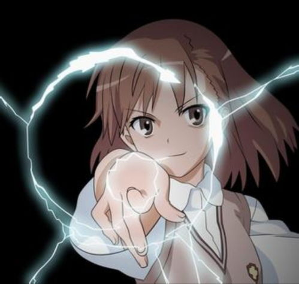
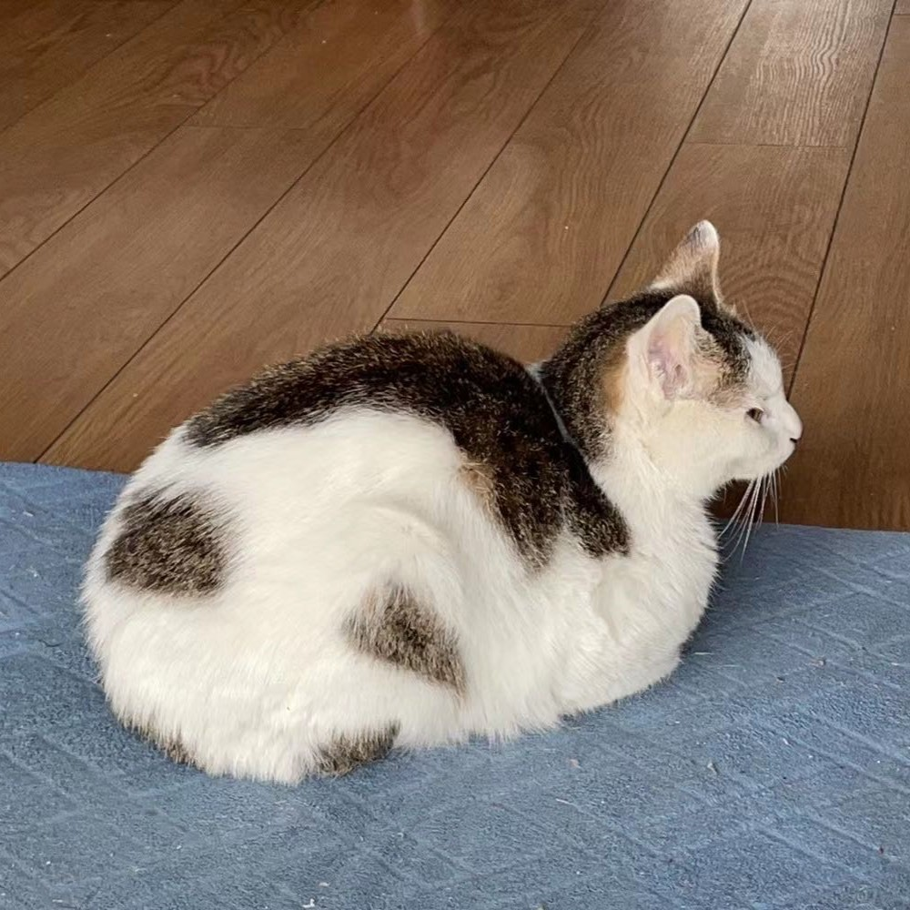

这里主要是一些用LaTeX编译的文档
但是不一定及时更新，这些pdf基本都是半成品，有些章节还没来得及写完
expe

电动力学期末复习笔记
这是expe第一次写复习向LaTeX,颜色调了小波奇的粉粉配色(这学期ta没看动画片,感觉迟早ta要开除二籍了)ta平常乱写markdown写习惯了，所以各个细节完全不会注意，可以逼死强迫症。
Bufan Zheng

量子力学笔记
这是我的量子力学学习笔记，大一大二写的，里面还包括附录，有一些群论和矢量分析的内容。后续有时间可能补齐高量内容。

天球振幅科研笔记
这是我的天球振幅科研笔记，算是到2021年为止这个方向的重要文献阅读笔记。这个笔记还有独立的一章是关于二维CFT的，相当于Blumenhagen前两章的内容。